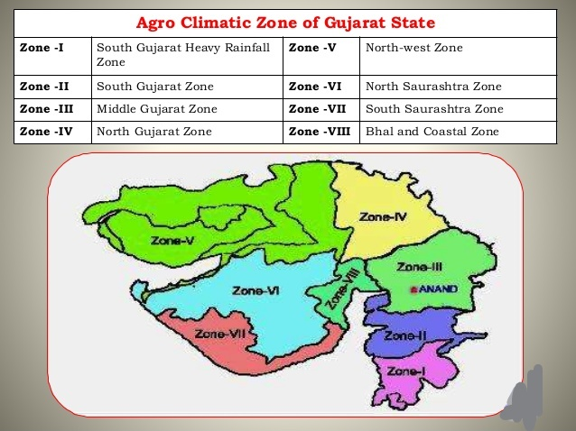

Select The Zones
Zones In Gujarat
- South Gujarat Heavy Rainfall Zone(Zone 1)
- South Gujarat Zone(Zone 2)
- Middle Gujarat Zone(Zone3)
- North Gujarat Zone(Zone 4)
- North West Zone(zone 5)
- North Saurastra Zone(Zone 6)
- South Saurasthara Zone(Zone 7)
- Bhal and Costal Zone(Zone 8)
